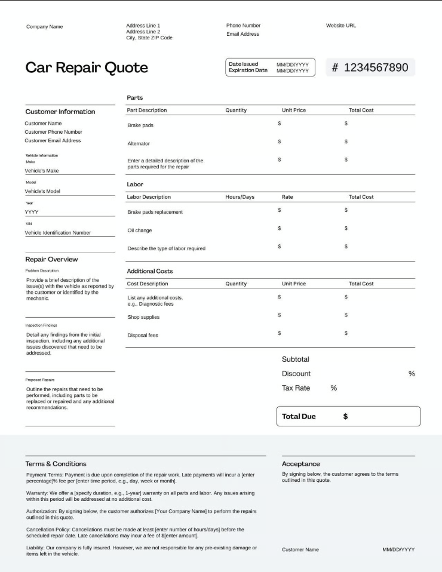
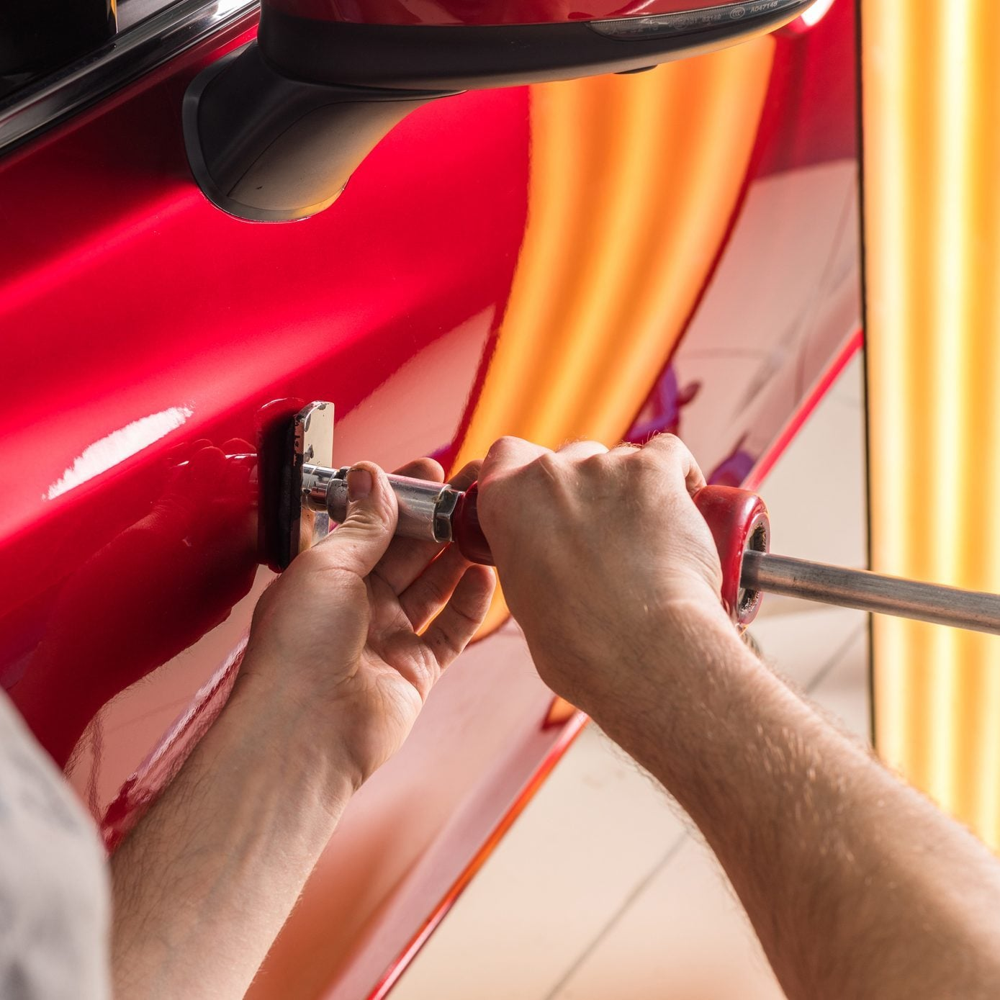
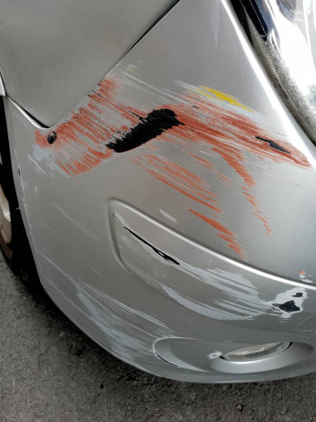
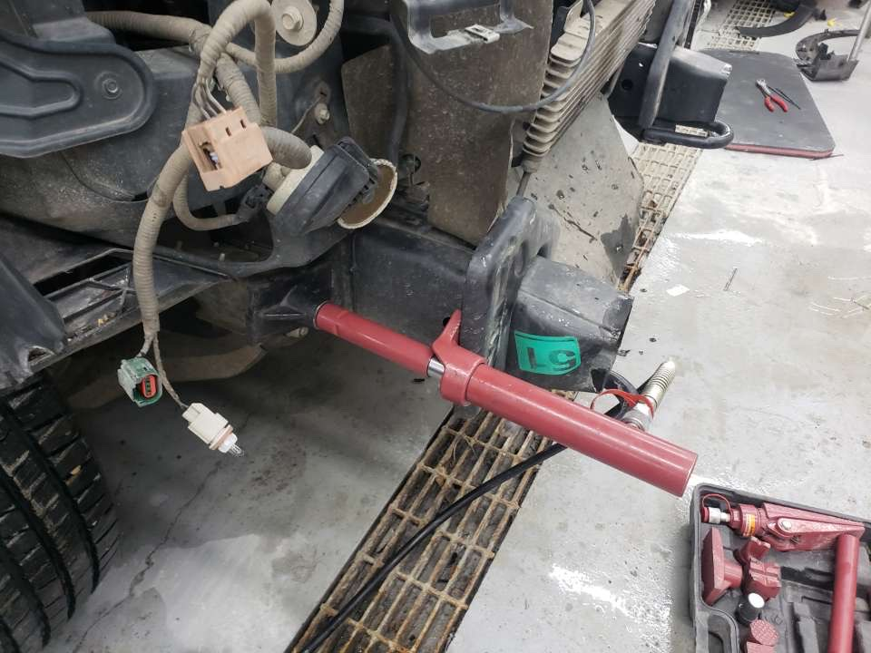
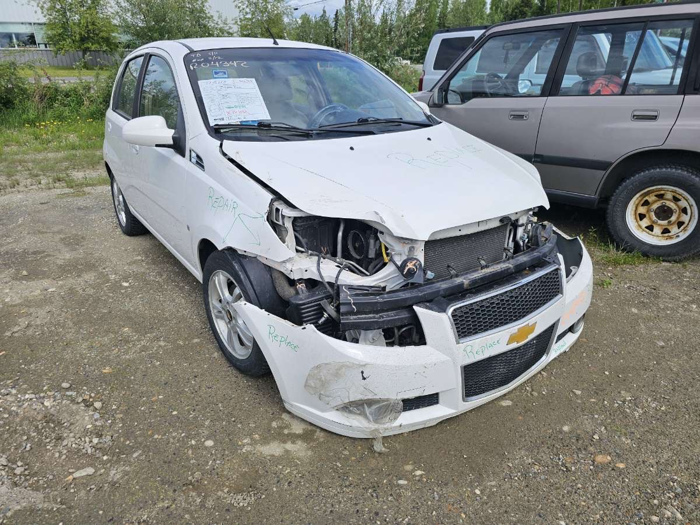
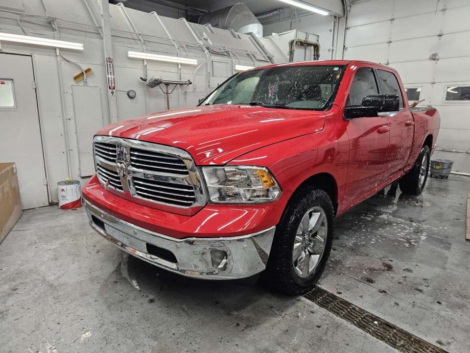
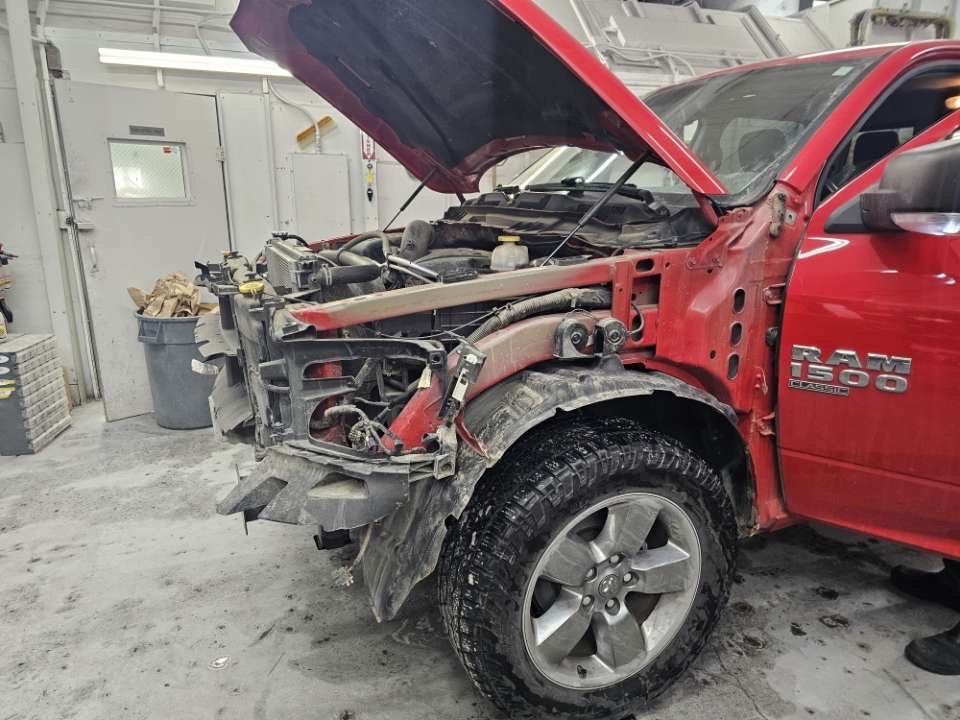
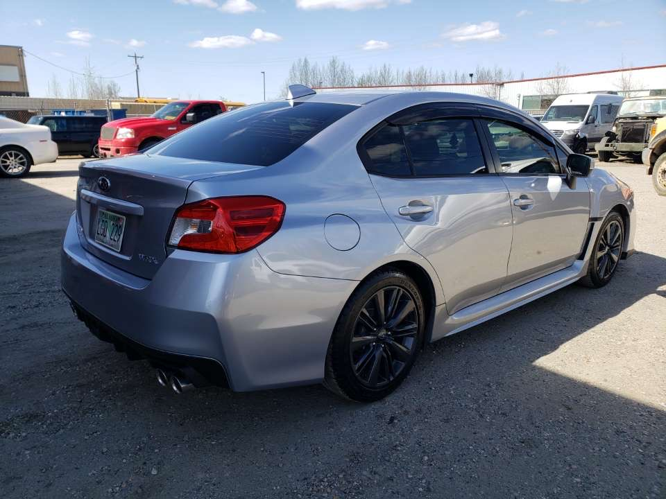
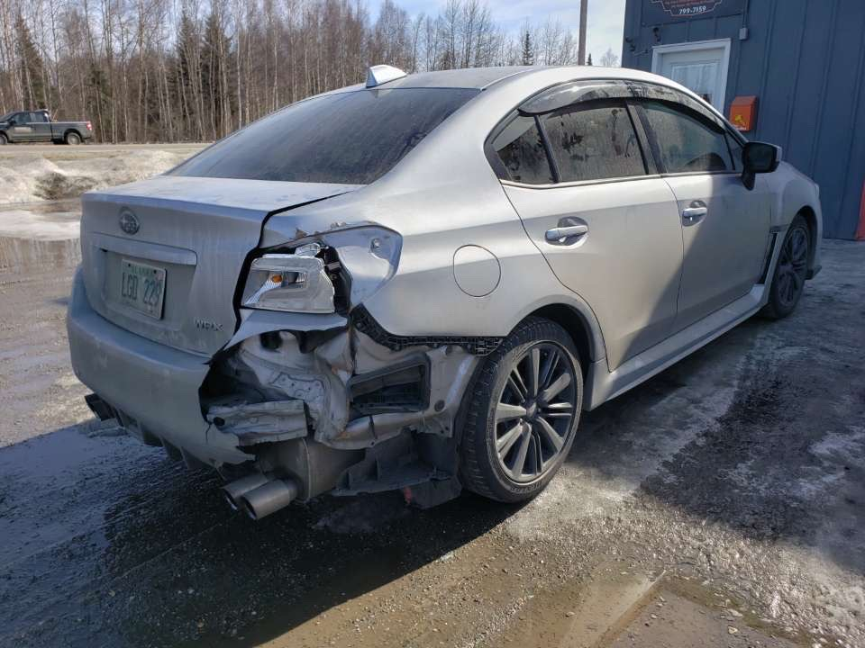

An Auto Body Shop capable of repairing any damage you need, dealing with all insurance companies.
Visit Us To Know MorePrecision Collision proudly serves the Fairbanks community with top-quality collision repair, dent removal, scratch repair, frame repair, and full paint work. Founded and operated by Ed Diaz, in 2015, our shop is based on a foundation of honesty and a genuine passion for restoring vehicles to their pre-accident condition. We will do our best to ensure the work done is to your satisfaction. Whether you've experienced a minor scratch or significant collision damage, our team treats every vehicle with the same care and attention to detail we'd give our own.
With decades of hands-on-experience in auto body repair and paint, our team is prepared to fix your car, returning it to it's original condition.
Precision Collision works with all major insurance providers to provide a hassle-free repair process for the customer from start to finish.
From your first call to the moment you drive away, we keep you informed and respected.
From small dings to major collision damage, we offer a full-range of auto body services to restore your vehicle to it's factory condition.

Free prelimiary repair quotes entailing the damage of the vehicle, time in shop, and cost to repair.

Dent removal restoring your vehicle's body panels to their orinial out of factory condition.

Scratch and paint repair matched precisely to your vehicle's color for a seamless result.

Frame straightening and structural repair to restore your vehicle's safety and alignment.

Collision repair covering all damage: structural, body, and mechanical. Bringing it back to pre-accident condition.
Hover over or tap each photo to see the before.




The goal of our business is aimed to make our customers happy and comfortable.
I couldn't recommend Precision Collision enough! Ed is an overall amazing person. He put every detail and thought into the repair of my vehicle and cared for it as if it were his own. He kept me up to date with all of the progress and was extremely sympathetic if there were any hang ups! Having a vehicle accident is stressful enough on its own the last thing you want to worry about is if the repair is being done correctly and I had zero worries when it came to Precision Collision and the repairs required. The photos speak for themselves!
Precision Collision has been driven to the top of the industry by Ed Diaz's winning personality, attention to detail, customer service and some of the finest body and paint work you could ever pay for. Ed has done work on several of my Vehicles, to include my Lexus ES350, SRT Dodge Challenger, WK2 SRT Jeep Grand Cherokee, Chevy Silverado, and our Baby, a deep maroon 1968 Chrysler New Yorker! My Vehicles go to Precision Collision every time!
From the initial phone conversation, to the thorough and informative estimate all the way to the finished product, Ed and his team were amazing. Ed was very friendly, he came out (in the snow no less) and pointed every single thing out that was on the estimate. I had requested that I didn't need absolutely everything replaced (had a minor fender bender and my front bumper was a quarter cracked off and the windshield fluid reservoir cracked) and other places in town wanted to simply replace everything to make their profits higher, but not here. Ed listened to exactly what I wanted and did it. They reused bits on the bumper that were fine and even went above and beyond to undo a ding in the decorative part of my bumper that was caused a year ago - didn't have to do that, but they did. The paint matched perfectly and now my car looks like a brand new one. And what was icing on the cake is that Ed didn't treat me like a girl who doesn't know what's going on with her car, like unfortunately some men do. I won't go anywhere else in the future and will recommend him to everyone for customer service, price and amazing work! Thank you so much!
We're here to help, give us a call, or find us on the map below.
Monday – Thursday: 8:00 AM – 5:15 PM
Friday: 9:00 AM - 4:30 PM
Saturday: Closed
Sunday: Closed